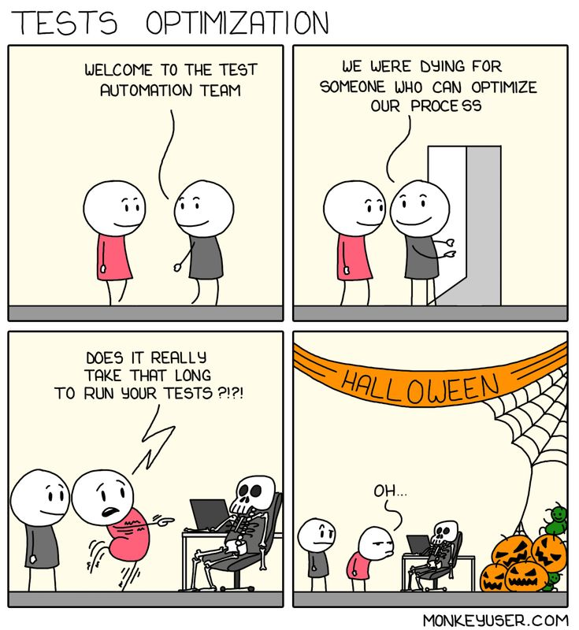

I decided to write a fancy test harness in golang today. The test wraps a big
internal engine for mgmt and at the
top-level it takes a context for cancellation. If
you don’t know about the context package, then you should go understand that
and then come back here… Don’t feel bad, I had no idea what it was about at
first either!
I assumed there would be some way to follow a notification from the test runner
down into my test to tell it when it was time to cleanup and exit early… I
expected that making my own ^C signal handler wouldn’t be correct, and I
(incorrectly) assumed that the interface I’d be looking for would offer a golang
context that I could pass into my code. I was wrong, but I was on the right
track and it did help me find what I was looking for. Let me explain the subtlety…
|  |
Tests often run with a bounded duration. This can either be infinite, or it can be a fixed number of seconds. For example, you could run a single test with a 42 second timeout by doing:
go test -timeout 42s github.com/purpleidea/mgmt/util/deadline -run TestSlowTest1
or you might let an entire test package run for up to five minutes instead:
go test -timeout 5m github.com/purpleidea/mgmt/util/deadline -v
When that timeout elapses, golang will force a panic and immediately shut it all
down. You might think it would be useful to have it cancel a context, but
there’s no guarantee things would shutdown right away– we are testing after
all, and deadlocks are a common issue that we look for. They’re even often found
in the cleanup path!
For the situation where you only care about the context in terms of cleaning
up your test when it’s complete, it is quite simple to add to the top of each
test:
func TestCleanup1(t *testing.T) {
wg := &sync.WaitGroup{}
defer wg.Wait()
ctx, cancel := context.WithCancel(context.Background())
defer cancel() // cleanup
// use ctx and wg.Add/wg.Done down here...
}
The testing package provides a Deadline method which when called, tells you what time the timeout will destroy your world. If you’re in the mood to, you can have a look at this and shut things down early. Here’s the API and documentation on the subject:
func (t *T) Deadline() (deadline time.Time, ok bool)
Deadline reports the time at which the test binary will have exceeded the timeout specified by the -timeout flag. The ok result is false if the -timeout flag indicates “no timeout” (0).
How would I use this in practice? There wasn’t an obvious example handy, so I cooked one up. It looks like this:
func TestDeadlineTimeout1(t *testing.T) {
min := time.Second * 3 // approx min time needed for the test
ctx := context.Background()
if deadline, ok := t.Deadline(); ok {
d := deadline.Add(-min)
newCtx, cancel := context.WithDeadline(ctx, d)
ctx = newCtx
defer cancel()
}
select {
case <-ctx.Done():
time.Sleep(min - (1 * time.Second)) // one second less for safety
}
}
In this example, I define a minimum amount of time that I need for my test. I
also start off with a top-level context. Next I get the actual deadline that
golang has defined for me. Keep in mind that this value is likely shared across
all of the tests, so don’t be greedy! Then I subtract that minimum and setup a
new context. The new context will get cancelled if you’re within that many
seconds from the final panic() timeout.
Let’s run a few examples to make sure this works as we intended it to. The package contains a fixed-duration three second test, and the fancy test seen above, but with some added logging. The full code example can be seen below.
james@computer:~/code/mgmt$ go test -timeout 10s github.com/purpleidea/mgmt/util/deadline -v
=== RUN TestSlowTest1
--- PASS: TestSlowTest1 (3.00s)
=== RUN TestDeadlineTimeout1
deadline_test.go:37: now: 2023-02-24 22:01:21.57705789 -0500 EST m=+3.002741019
deadline_test.go:38: d: 2023-02-24 22:01:25.57452127 -0500 EST m=+7.000204332
deadline_test.go:46: ctx: 2023-02-24 22:01:25.577851787 -0500 EST m=+7.003534903
deadline_test.go:48: sleep: 2023-02-24 22:01:27.578795977 -0500 EST m=+9.004479068
--- PASS: TestDeadlineTimeout1 (6.00s)
PASS
ok github.com/purpleidea/mgmt/util/deadline 9.006s
Here we can see that given ten seconds, our fixed-duration test finished in three, and our “smart” (but greedy) test took an additional six. It left us with one second to spare before the panic!
james@computer:~/code/mgmt$ go test -timeout 6s github.com/purpleidea/mgmt/util/deadline -v
=== RUN TestSlowTest1
--- PASS: TestSlowTest1 (3.00s)
=== RUN TestDeadlineTimeout1
deadline_test.go:37: now: 2023-02-24 22:01:47.391144074 -0500 EST m=+3.001178645
deadline_test.go:38: d: 2023-02-24 22:01:47.39014766 -0500 EST m=+3.000182129
deadline_test.go:46: ctx: 2023-02-24 22:01:47.391900938 -0500 EST m=+3.001935477
deadline_test.go:48: sleep: 2023-02-24 22:01:49.392791585 -0500 EST m=+5.002826154
--- PASS: TestDeadlineTimeout1 (2.00s)
PASS
ok github.com/purpleidea/mgmt/util/deadline 5.005s
Here with much less time to spare, our fancy test only took two seconds to run.
If you run this yourself, note when the ctx log message shows up; you’ll see
it appear instantly!
james@computer:~/code/mgmt$ go test -timeout 4s github.com/purpleidea/mgmt/util/deadline -v
=== RUN TestSlowTest1
--- PASS: TestSlowTest1 (3.00s)
=== RUN TestDeadlineTimeout1
deadline_test.go:37: now: 2023-02-24 22:02:01.411082723 -0500 EST m=+3.001786858
deadline_test.go:38: d: 2023-02-24 22:01:59.409476114 -0500 EST m=+1.000180191
deadline_test.go:46: ctx: 2023-02-24 22:02:01.411647744 -0500 EST m=+3.002351875
panic: test timed out after 4s
goroutine 18 [running]:
testing.(*M).startAlarm.func1()
/usr/lib/golang/src/testing/testing.go:2029 +0x8e
created by time.goFunc
/usr/lib/golang/src/time/sleep.go:176 +0x32
goroutine 1 [chan receive]:
testing.(*T).Run(0xc00012a1a0, {0x525b13?, 0x4b6b45?}, 0x52d2d0)
/usr/lib/golang/src/testing/testing.go:1487 +0x37a
testing.runTests.func1(0xc00007a390?)
/usr/lib/golang/src/testing/testing.go:1839 +0x6e
testing.tRunner(0xc00012a1a0, 0xc000104cd8)
/usr/lib/golang/src/testing/testing.go:1439 +0x102
testing.runTests(0xc0001141e0?, {0x5f9480, 0x2, 0x2}, {0x7f209a8eb108?, 0x40?, 0x601a40?})
/usr/lib/golang/src/testing/testing.go:1837 +0x457
testing.(*M).Run(0xc0001141e0)
/usr/lib/golang/src/testing/testing.go:1719 +0x5d9
main.main()
_testmain.go:49 +0x1aa
goroutine 17 [sleep]:
time.Sleep(0x77359400)
/usr/lib/golang/src/runtime/time.go:194 +0x12e
github.com/purpleidea/mgmt/util/deadline_test.TestDeadlineTimeout1(0xc000082340)
/home/james/code/mgmt/util/deadline/deadline_test.go:47 +0x2a6
testing.tRunner(0xc000082340, 0x52d2d0)
/usr/lib/golang/src/testing/testing.go:1439 +0x102
created by testing.(*T).Run
/usr/lib/golang/src/testing/testing.go:1486 +0x35f
FAIL github.com/purpleidea/mgmt/util/deadline 4.005s
FAIL
james@computer:~/code/mgmt$ echo $?
1
Lastly, in this scenario, things could never finish in four seconds and the test runner caused everything to panic. It correctly propagated a failure exit code as well.
Here’s what the full code looks like. It’s surprisingly short. Put this into
a deadline_test.go somewhere, and have fun experimenting with it!
// Package deadline_test has examples to test the testing deadline system.
package deadline_test
import (
"context"
"testing"
"time"
)
func TestSlowTest1(t *testing.T) {
time.Sleep(3 * time.Second)
}
func TestDeadlineTimeout1(t *testing.T) {
now := time.Now()
min := time.Second * 3 // approx min time needed for the test
ctx := context.Background()
if deadline, ok := t.Deadline(); ok {
d := deadline.Add(-min)
t.Logf(" now: %+v", now)
t.Logf(" d: %+v", d)
newCtx, cancel := context.WithDeadline(ctx, d)
ctx = newCtx
defer cancel()
}
select {
case <-ctx.Done():
t.Logf(" ctx: %+v", time.Now())
time.Sleep(min - (1 * time.Second)) // one second less for safety
t.Logf("sleep: %+v", time.Now())
}
}
I think it would be more elegant to be able to get a context from the
testing.T type, but it would only make sense
under the guise of a “approaching the test timeout limit” and that would be a
whole other parameter we’d have to pass through, and of course it would maybe be
something that we’d want to be different with each test or subtest, and so the
aforementioned mechanism makes this all doable, even if it’s a bit more verbose.
The best reference is here in this issue for the deadline implementation.
You can see that they even had a tentative Context API added, but this was
later removed. I didn’t dig too deeply, but I found it funny that they didn’t
add a clear example on how to use Deadline in your tests. I’d send a patch if
doing so wasn’t fraught with CLA’s.
I hope you enjoyed this. Please leave me a comment if this taught you something new!
Happy Hacking,
James
You can hire James and his team at m9rx corporation.
You can follow James on Mastodon for more frequent updates and other random thoughts.
You can follow James on Twitter for more frequent updates and other random thoughts.
You can support James on GitHub if you'd like to help sustain this kind of content.
You can support James on Patreon if you'd like to help sustain this kind of content.
Your comment has been submitted and will be published if it gets approved.
Click here to see the patch you generated.
{kind=link}
Comments
Nothing yet.
Post a comment